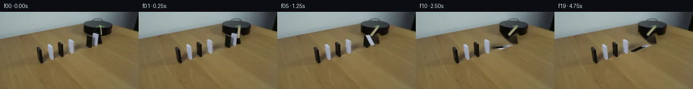

![首帧]()

Round 00
2026-11-04T22:42:00.220277+00:00像素候选变化代码 +220/−0inspection 更新
pixels ba90b66d8771531d · code f8f347cc08ba8d9d
查看本轮 generate.py 真实 diff
--- previous/generate.py
+++ current/generate.py
@@ -0,0 +1,220 @@
+#!/usr/bin/env python3
+"""Generate the 20-frame locked-camera domino continuation.
+
+The photograph is retained pixel-for-pixel outside small motion regions. Moving
+objects are removed with local OpenCV inpainting and replaced by anti-aliased,
+shaded projected geometry. Frame zero is always the untouched source.
+"""
+
+from pathlib import Path
+import math
+
+import cv2
+import numpy as np
+from PIL import Image, ImageDraw, ImageFont, ImageFilter
+
+from artifact_io import save
+
+
+ROOT = Path(__file__).resolve().parent
+W, H = 256, 144
+AA = 4
+
+
+def polygon_mask(points, dilate=0):
+ mask = np.zeros((H, W), np.uint8)
+ cv2.fillPoly(mask, [np.rint(points).astype(np.int32)], 255)
+ if dilate:
+ kernel = cv2.getStructuringElement(cv2.MORPH_ELLIPSE, (2 * dilate + 1,) * 2)
+ mask = cv2.dilate(mask, kernel)
+ return mask
+
+
+def inpaint_regions(source, masks):
+ mask = np.maximum.reduce(masks)
+ # Telea propagation keeps the surrounding photographed grain and separates
+ # the dark platform above from the warm table below better than a flat fill.
+ return cv2.inpaint(source, mask, 3.0, cv2.INPAINT_TELEA)
+
+
+def aa_mask_polygon(points, blur=0.0):
+ canvas = Image.new("L", (W * AA, H * AA), 0)
+ draw = ImageDraw.Draw(canvas)
+ pts = [(round(x * AA), round(y * AA)) for x, y in points]
+ draw.polygon(pts, fill=255)
+ if blur:
+ canvas = canvas.filter(ImageFilter.GaussianBlur(blur * AA))
+ return np.asarray(canvas.resize((W, H), Image.Resampling.LANCZOS), np.float32) / 255.0
+
+
+def blend_mask(image, color, mask, opacity=1.0):
+ a = np.clip(mask * opacity, 0.0, 1.0)[..., None]
+ image[:] = image * (1.0 - a) + np.asarray(color, np.float32) * a
+
+
+def aa_polygon(image, points, color, opacity=1.0):
+ blend_mask(image, color, aa_mask_polygon(points), opacity)
+
+
+def aa_line(image, points, color, width, opacity=1.0):
+ layer = Image.new("L", (W * AA, H * AA), 0)
+ draw = ImageDraw.Draw(layer)
+ pts = [(round(x * AA), round(y * AA)) for x, y in points]
+ draw.line(pts, fill=255, width=max(1, round(width * AA)), joint="curve")
+ radius = width * AA / 2
+ for x, y in (pts[0], pts[-1]):
+ draw.ellipse((x - radius, y - radius, x + radius, y + radius), fill=255)
+ mask = np.asarray(layer.resize((W, H), Image.Resampling.LANCZOS), np.float32) / 255.0
+ blend_mask(image, color, mask, opacity)
+
+
+def draw_arm(image, degrees):
+ """Draw the wooden arm; increasing image-space angle is clockwise."""
+ pivot = np.array([186.0, 27.5], np.float32)
+ a = math.radians(degrees)
+ direction = np.array([math.cos(a), math.sin(a)], np.float32)
+ tip = pivot + 19.5 * direction
+
+ # A small soft shadow makes the arm sit on the platform surface.
+ aa_line(image, [pivot + (1.2, 1.8), tip + (1.2, 1.8)], (3, 3, 2), 4.7, 0.34)
+ aa_line(image, [pivot, tip], (143, 134, 108), 5.0, 1.0)
+ aa_line(image, [pivot + 0.4 * direction, tip - 0.8 * direction], (188, 180, 147), 1.25, 0.72)
+ # Green spindle cap visible in the source photograph.
+ cap = aa_mask_polygon([(182.5, 25.0), (187.7, 25.2), (189.2, 27.0),
+ (186.3, 28.7), (182.8, 27.6)])
+ blend_mask(image, (75, 126, 75), cap, 0.78)
+ aa_line(image, [(184.1, 26.0), (187.0, 26.4)], (132, 178, 118), 0.75, 0.8)
+
… diff truncated; 133 more lines …